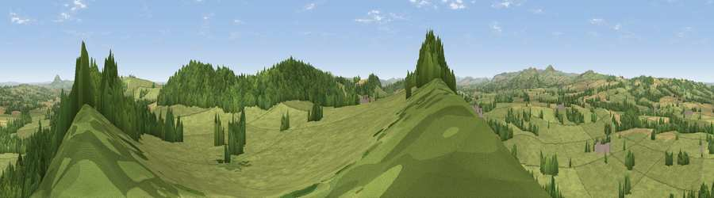

Viewpoint near Longville in the Dale
#14112 in England · top 42% of its area beats it · near Longville in the DaleWhere it is
The exact computed spot (SO 55225 94375). Click the marker for map links.
The view, rendered

A 360° render of this exact spot computed from the terrain model, tree cover and land cover — summer colours, afternoon light, calibrated against photographs of famous viewpoints. Real trees, hedges and buildings will differ in detail.
The panorama
Grey silhouette: terrain skyline in each direction (720 bearings, Earth curvature and refraction included). Dashed green: skyline with trees (+15 m) and buildings (+8 m) as obstacles. Blue strip: how far the ground is visible on each bearing.
Where the view opens
Wedge length = distance to the farthest visible ground on that bearing (vegetation-aware). Rings at 10, 25 and 50 km.
What fills the view
64% grassland · 28% woodland · 7% cropland
Angular shares of the visible panorama (visual magnitude), not map area. Landscape diversity 0.37 (0–1 Shannon).
Key numbers
More beautiful places nearby
The staircase of upgrades: each row has a higher view potential than everything closer. Driving times are estimates from straight-line distance, calibrated against real road routing — check an actual route before setting out.
| Place | Direction | Drive | Score |
|---|---|---|---|
| Fegg Hill | SSE · 1 km | ~3 min | 68.0 |
| Hungerford Hill | SSW · 4 km | ~10 min | 72.6 |
| Viewpoint near Broadstone | SSW · 5 km | ~11 min | 72.8 |
| Viewpoint near Bourton | NE · 5 km | ~12 min | 75.2 |
| Lodge Hill | NW · 6 km | ~12 min | 76.1 |
| Viewpoint near Bourton | NE · 6 km | ~12 min | 76.3 |
| Viewpoint near Acton Burnell | NNW · 6 km | ~13 min | 78.0 |
| Viewpoint near Leebotwood | WNW · 7 km | ~14 min | 80.7 |
52.54537, -2.66169 · source: screening · position refined by local search. Computed location — check access rights before visiting.